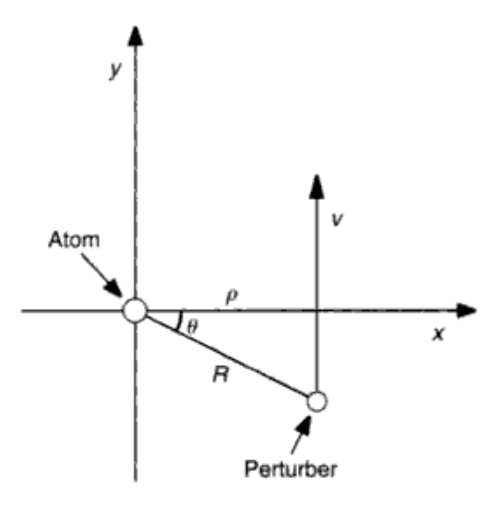
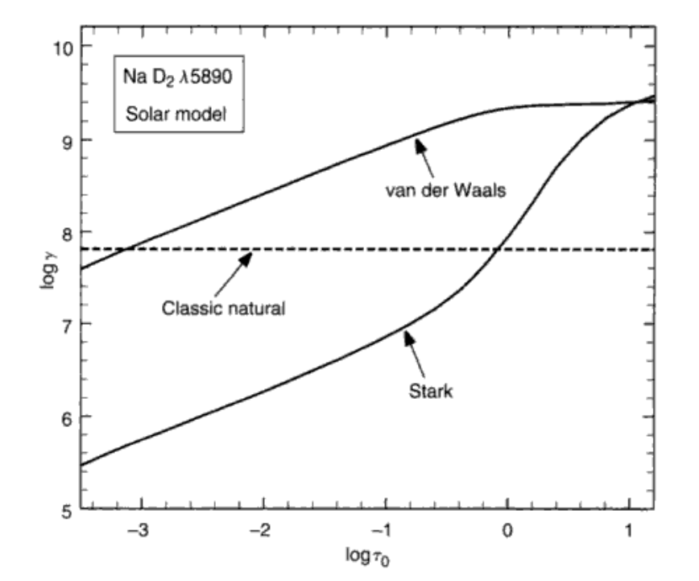

谱线的强度和形状都是我们很关心的东西，因为它们可以同时受多个物理量影响；相反连续谱的形状基本上只是有效温度的函数。谱线吸收系数就决定了这条谱线位于什么波长、将会有什么形状。
这一章我们基本上讨论三种谱线致宽的机制：自然致宽、压强致宽以及热运动致宽。虽然字面上看起来这三个机制只会告诉我们谱线宽了多少，但是实际上我们会推导出谱线吸收系数，也就把能定的都定下来了。从结论上来说前两个致宽是一个洛仑兹轮廓，最后一个是高斯轮廓；然后把它们卷积起来就得到最终的轮廓了。
自然致宽
吸收嘛，肯定得有入射光\($ E $\)和吸收光的原子。光作为电磁波有波动方程以及光速的关系：
\[ \frac{\partial^2 E}{\partial t^2} = v^2 \frac{\partial^2 E}{\partial x^2} \]
\[ v = c\left(\frac{\epsilon_0 \mu_0}{\epsilon \mu}\right)^{1/2} \]
而且光可以叠加，为了简单起见只考虑其中的一个成分：
\[ E = E_0 e^{-2\pi i (x/\lambda-t/P)} = E_0 e^{-2\pi i (x-vt)/\lambda} = E_0 e^{-i\omega (x/v-t)} \tag{11.1}\]
我们忽略磁场，就有\($ \mu = \mu_0 $\)。但是因为吸收光的原子是一个个电偶极子，所以介电常数发生了变化：
\[ \frac{\epsilon}{\epsilon_0} = \frac{E + 4\pi Nqz}{E} = 1 + \frac{4\pi Nqz}{E} \tag{11.2} \]
\[ N \]
\[ \frac{d^2 z}{dt^2} + \gamma \frac{dz}{dt} + \omega_0^2 z = \frac{e}{m} E_0 e^{i\omega t} \tag{11.3}\]
\[ x = 0 \]
\[ -\omega^2 z + \gamma i\omega z + \omega_0^2 z = \frac{e}{m} E_0 e^{i\omega t} \]
或者
\[ z = \frac{e}{m} \frac{E_0 e^{i\omega t}}{\omega_0^2 - \omega^2 + i\gamma\omega} = \frac{e}{m} \frac{E}{\omega_0^2 - \omega^2 + i\gamma\omega} \]
可以看到\($ \omega = \omega_0 $\)的时候振幅最大，被称为共振频率，也是谱线所在的地方。将这个结果代回\($ (11.2) $\)，就有
\[ \frac{\epsilon}{\epsilon_0} = 1 + \frac{4\pi Ne^2}{m}\frac{1}{\omega_0^2 - \omega^2 + i\gamma\omega} \tag{11.4 }\]
\[ \epsilon \]
\[\begin{split} \begin{align} \frac{c}{v} = \left(\frac{\epsilon}{\epsilon_0}\right)^{1/2} &\approx 1 + \frac{1}{2} \frac{4\pi Ne^2}{m}\frac{1}{\omega_0^2 - \omega^2 + i\gamma\omega} \\
&= 1 + \frac{2\pi Ne^2}{m}\left[\frac{\omega_0^2-\omega^2}{(\omega_0^2-\omega^2)^2 + \gamma^2\omega^2} - i\frac{\gamma\omega}{(\omega_0^2-\omega^2)^2 + \gamma^2\omega^2}\right]
\end{align}\end{split}\]
我们希望将这个量代回\($ (11.1) $\)中间那里，然后求光强；而光强是场强实部的平方，所以可以只考虑上式中的虚部，有：
\[ I = I_0 e^{-2k\omega x/c} = I_0 e^{-l_\nu \rho x} \]
\[ l_\nu \rho = \frac{4\pi Ne^2}{mc} \frac{\gamma\omega^2}{(\omega_0^2-\omega^2)^2 + \gamma^2\omega^2} \tag{11.5}\]
考虑到谱线轮廓很小，\($ \omega \approx \omega_0 $\)，有
\[ \omega_0^2 - \omega^2 = (\omega_0-\omega)(\omega_0+\omega) \approx 2\omega \Delta\omega \]
所以\($ (11.5) $\)就变成了
\[ l_\nu \rho = \frac{2\pi Ne^2}{mc} \frac{\gamma}{\Delta\omega^2 + (\gamma/2)^2} \tag{11.6}\]
这是某个圆频率下单位体积内的总吸收，而如果我们想计算单个原子的吸收的话，有\($ l_\nu \rho = N \alpha $\)，
\[\begin{split} \begin{align}
\alpha &= \frac{2\pi e^2}{mc} \frac{\gamma}{\Delta\omega^2 + (\gamma/2)^2} \\
&= \frac{e^2}{mc} \frac{\gamma/4\pi}{\Delta\nu^2 + (\gamma/4\pi)^2} \\
&= \frac{e^2}{mc} \frac{\lambda^2}{c} \frac{\gamma\lambda^2/4\pi}{\Delta\lambda^2 + (\gamma\lambda^2/4\pi c)^2} \tag{11.7}
\end{align} \end{split}\]
分别在圆频率、频率和波长下。这就是主要的结果了，也是一个洛仑兹轮廓。不知道的话请看第二章。这个轮廓的宽度由阻尼系数\($ \gamma $\)决定。
洛仑兹轮廓的积分为\($ \pi $\)，所以
\[ \int_0^\infty \alpha d\nu = \int_{-\infty}^\infty \alpha d\Delta\nu = \frac{\pi e^2}{mc} \tag{11.8}\]
或者
\[ \int_0^\infty \alpha d\lambda = \frac{\pi e^2}{mc} \frac{\lambda^2}{c} \tag{11.9}\]
这个量指的是一个原子每秒每平方弧度（只有一个方向）所吸收的光的比例。实际上的比例比上两式要小，这是因为在推导的过程中我们没有考虑量子力学带来的修正。假设这个修正量为\($ f $\)，上面的积分同时意味着原子发生吸收的概率，也就是\($ B_{lu}h\nu (5.17)\)$，所以
\[ \int_0^\infty \alpha d\nu = \frac{\pi e^2}{mc}f = B_{lu}h\nu \]
\[ \Rightarrow f = \frac{mc}{\pi e^2} B_{lu}h\nu = 7.484 \times 10^{-7} \frac{B_{lu}}{\lambda} \tag{11.11}\]
用\($ (6.8) $\)将\($ B_{lu} $\)换成\($ A_{lu} $\)，有
\[ f = \frac{mc^3}{2\pi e^2\nu^2} \frac{g_u}{g_l}A_{ul} = 1.884 \times 10^{-15} \lambda^2 \frac{g_u}{g_l} A_{ul} \tag{11.12}\]
如果我们只考虑受激辐射的话，可以写出类似的公式：
\[ f_\mathrm{em} = \frac{mc}{\pi e^2} B_{ul}h\nu \]
所以有
\[ g_u f_\mathrm{em} = g_l f_\mathrm{abs} \]
因此很多实际的表格会给出\($ gf $\)而不是单纯的\($ f $\)以避免歧义。多数的\($ f $\)值都是测出来的，不过有些简单的比如氢原子有公式：
\[ f = \frac{2^5}{3^{3/2}\pi} \frac{g_\mathrm{bb}}{l^5u^3} \left( \frac{1}{l^2} - \frac{1}{u^2} \right)^{-3} \]
自然致宽的阻尼常数
知道了自然致宽是一个洛仑兹轮廓之后，只要知道阻尼常数\($ \gamma $\)就可以确定轮廓了。Menzal (1961)给出了阻尼常数的方程：
\[ \frac{dW}{dt} = -\frac{2}{3}\frac{e^2\omega^2}{mc^3}W = -\gamma W \]
所以可以得出
\[ \gamma = \frac{2e^2\omega^2}{3mc^3} = \frac{0.22}{\lambda^2} \]
当然后面的等号需要\($ \lambda $\)的单位为厘米。把\($ \gamma $\)和它的变式放回\($ (11.7) $\)就可以算出不同自变量下的轮廓宽度了。可以看到在\($ \Delta \lambda $\)下，所有谱线的宽度都是一样的，\($ 0.59\times 10^{-4} $\)埃。
同样也需要引入量子力学的修正。一个现象学的方法就是将能级的能量\($ W $\)看作很多个分立的小能级之和，\($ W = N_uh\nu\)\(，那么\)$ (11.13) \($可以被写成\)$ dN_u/dt = -\gamma N_u \($。同时能级占据数对时间的导数也是跃迁的概率，所以\)$ dN_u/dt = -4\pi A_{ul} N_u $$。考虑所有可能的跃迁，有
\[ \gamma_u = 4\pi \sum_{l<u} A_{ul} \]
这个爱因斯坦系数可以和海森堡不确定原理联系起来。不确定原理告诉我们\($ \Delta W_u \Delta t \gtrsim h/2\pi $\)，而\($ \Delta t = 1/\sum 4\pi A_{ul} $\)，因为\($ A_{ul} $\)代表着1秒内跃迁的概率。所以\($ \Delta W_u \gtrsim 2h \sum A_{ul} $\)，也就是每个能级都有一个宽度。
那么跃迁总不是一个能级的事情，所以谱线的自然致宽阻尼常数是两个能级的轮廓卷积。从第二章我们知道\($ \gamma = \gamma_u + \gamma_l $\)。如果辐射场很强的话，我们还要考虑受激辐射和吸收的问题：
\[ \gamma_u = 4\pi \sum A_{ul} + 4\pi \sum I_\nu B_{ul} + 4\pi \sum I_\nu B_{uk} \]
这样会更全面一点。
压力致宽
压力致宽其实挺好理解，原子被别人撞了（在别的粒子附近），能级就变了，会带来谱线移动、不对称性和致宽。因为是在别的粒子附近，所以实际上是粒子的电场使得原子的能级发生变化，一般指的是斯塔克效应(Stark effect)；其实斯塔克效应就是电场下的赛曼效应。同时粒子离原子越近(\($ R $\)越小)，影响(\($ \Delta W $\))应该就越大；根据这个思想我们可以写出这样的一条式子：
\[ \Delta W = c/R^n \tag{11.16} \]
至于\($ n $\)是多少，就取决于粒子的种类了；一般的作用如下：
\($ n $\) |
种类 |
影响的谱线 |
粒子 |
|---|
2 |
线性斯塔克效应 |
氢线 |
光子、电子 |
3 |
共振致宽 |
|
同种原子 |
4 |
二次斯塔克效应 |
高温恒星中的多数谱线 |
离子、电子 |
6 |
范德瓦尔斯效应 |
低温恒星中的多数谱线 |
中性氢 |
把上面的能级能量变化转为谱线频率的变化，可以得出
\[ \Delta \nu = C_n / R^n \tag{11.17}\]
\[ C_n \]
简化！(The impact approximation)
貌似到这里我们还没能给出谱线轮廓，怎么办？当然是简化了。假设碰撞是绝热的，也就是碰撞不会导致跃迁；同时因为恒星大气比较稀薄，我们认为碰撞的时间远远短于两次碰撞的时间(impact apprximation)。
我们把一个光子看成一个长为\($ W = \Delta t $\)的方波，那么它的光谱就是\($ \mathrm{sinc}^2{\pi\Delta t (\nu - \nu_0)} $\)，宽度为\($ \Delta \nu = 1 / \Delta t $\)。现在吸收这个光子的原子被另外的粒子影响，而且影响的大小不断在变化，那么我们就将这个光子分成很多小份（小的方波\($ \Delta t_j $\)），每个小份之间的相位在受到碰撞之后不再一样，就需要独立地看待了。当然这个时候小份光的光谱就变宽了(\($ \Delta \nu_j = 1 / \Delta t_j $\))。
回到宏观的视角，每一次碰撞的\($ \Delta t_j $\)都是不一样的，那么最后中的谱线宽应该为\($ \Delta t_j $\)对应的sinc函数乘上它的概率再对所有的\($ \Delta t_j $\)积分。通过简单的推理可得\($ \Delta t_j $\)的分布为
\[ dP(\Delta t_j) = e^{-\Delta t_j/\Delta t_0} d\Delta t_j/\Delta t_0 \]
其中\($ \Delta t_0 $\)是典型的碰撞间隔时间。所以原子吸收系数就是：
\[ \alpha = \int_0^\infty \Delta t^2 \left( \frac{\sin{\pi \Delta t (\nu-\nu_0)}}{\pi \Delta t (\nu-\nu_0)} \right)^2 e^{-\Delta t_j/\Delta t_0} d\Delta t_j/\Delta t_0 \]
积分的结果（理所当然地）是一个洛仑兹轮廓：
\[ \alpha = \frac{\mathrm{constant}}{4\pi^2(\nu-\nu_0)^2 + (1/\Delta t_0)^2} = \mathrm{constant} \frac{\gamma_n/4\pi}{(\nu-\nu_0)^2 + (\gamma_n/4\pi)^2} \tag{11.19}\]
压力致宽的阻尼系数
从上面可以看出来\($ \gamma_n = 2/\Delta t_0 $\)，那就是要算\($ \Delta t_0 $\)了；不过这里我们要绕一个圈子。
考虑谱线频率的累积变化：
\[ \phi = 2\pi \int_0^\infty \Delta \nu dt = 2\pi \int_0^\infty C_n R^{-n} dt \tag{11.20}\]
先只考虑一个粒子，做直线运动，有
\[ \phi = 2\pi \int_0^\infty C_n \frac{cos^n{\theta}}{\rho^n} dt \]

原子受影响的示意图
换元什么的，\($ v = dy/dt = (\rho/\cos{\theta})d\theta/dt, dt = (\rho/v)d\theta/\cos^2{\theta} $\)，有
\[ \phi = \frac{2\pi C_n}{v\rho^{n-1}} \int_{-\pi/2}^{\pi/2} \cos^{n-2}{\theta} d\theta \tag{11.21}\]
这个积分在某些\($ n $\)的值如下：
n |
\($ \int_{-\pi/2}^{\pi/2} \cos^{n-2}{\theta} d\theta $\) |
|---|
2 |
\($ \pi $\) |
3 |
\($ 2 $\) |
4 |
\($ \pi/2 $\) |
5 |
\($ 4/3 $\) |
6 |
\($ 3\pi/8 $\) |
我们很随意地确定一个阈值，\($ \phi = 1 \mathrm{rad} $\)，得到一个临界半径：
\[ \rho_0 = \left[ \frac{2\pi C_n}{v} \int_{-\pi/2}^{\pi/2} \cos^{n-2}{\theta} d\theta \right]^{1/(n-1)} \tag{11.22}\]
然后我们只考虑那些相位差超过1个弧度，也就是距离小于临界半径的那些碰撞。在\($ \Delta t_1 $\)的时间内，这样的碰撞应该有\($ \pi \rho_0^2 v N \Delta t_1 $\)次。那么当我们让\($ \Delta t_1 = \Delta t_0 $\)时，应该只有1次碰撞。所以
\[ \gamma_n = \frac{2}{\Delta t_0} = 2\pi \rho_0^2 v N \tag{11.23} \]
上式就剩一个平均相对速率\($ v $\)不知道。其实就是Maxwell-Boltzmann分布的结论：
\[ v = \left[ \frac{8kT}{\pi} \left( \frac{1}{m_A} + \frac{1}{m_p} \right) \right]^{1/2} \tag{11.24}\]
其实\($ \gamma_n $\)更准确的形式可以表示为
\[ \gamma_n = N \int_{-\infty}^\infty vf(v)\sigma_n(v)dv \tag{11.25}\]
两个例子
请自行推导，对于二次斯塔克效应以及范德瓦尔斯效应，有：
\[ \log{\gamma_4} \approx 19 + \frac{2}{3} \log{C_4} + \log{P_\mathrm{e}} - \frac{5}{6} \log{T} \tag{11.27} \]
\[ \log{\gamma_6} \approx 20 + 0.4 \log{C_6} + \log{P_\mathrm{e}} - 0.7 \log{T} \tag{11.29} \]
画出来就像下面这样：

Na I D2线的damping constent
上面这两条式子在谱线计算里面经常会被用到。当然实际和理论还是有点区别，所以会加一个系数，随时修正。
氢线的致宽
见过谱线的同学们应该都知道，氢线的致宽和其他线的致宽根本不在一个量级上。这是因为氢线致宽的因素主要是线性斯塔克效应。那么应该怎么去计算氢线的致宽呢？
与压力致宽的想法类似，我们从下式开始：
\[ \Delta \lambda_j = c_j E \tag{11.31}\]
最早我们只考虑了一次电离离子的影响(\($ E = e/R^2 $\))，同时因为平方反比下降，我们只考虑距离氢原子最近的那个离子。此时在半径为\($ R $\)的球面上找到最近的离子的概率为不在球内的概率乘上在表面的概率：
\[ P(R)dR = P_N(R)4\pi R^2 N dR \tag{11.32}\]
那么再次通过简单的推理得到在半径为\($ R $\)的球内找不到最近的离子的概率为
\[ P_n(R) = P_n(0)e^{-4\pi R^3N/3} \]
考虑到\($ R = 0, P_n = 1 $\)以及定义\($ R_0 = (4\pi N/3)^{-1/3} $\)，
\[ P_n(R) = e^{-(R/R_0)^3} \]
所以\($ (11.32) $\)变为
\[ P(R)dR = 3 \frac{R^2}{R_0^3} e^{-(R/R_0)^3} dR \]
或者换元成场强\($ \beta = E/E_0 $\)的话，
\[ P(\beta)d\beta = \frac{3}{2} \beta^{-5/2} e^{-\beta^{-3/2}} d\beta \tag{11.34}\]
就差不多了。当然更准确\($ P(\beta) $\)也是有的，式子\($ (11.35) $\)。
现在轮廓已经有了，然后就是加上量子力学修正（暂时略，还没有很好的理解）。最后画出来就像图11.9一样。当然还有一些没有考虑：电子带来的致宽，在线翼处会很明显；还有其他氢原子带来的致宽，在中低温恒星中比较明显。
热运动致宽
这个就简单了，高中生都知道的东西。多普勒致宽是因为有视向速度\($ v_R $\)：
\[ \frac{\Delta\lambda}{\lambda} = \frac{\Delta\nu}{\nu} = \frac{v_R}{c} \tag{11.38} \]
由\($ (11.1) $\)有
\[ \frac{\mathrm{d}N(v_R)}{N} = \frac{1}{\pi^{1/2}v_0} e^{-(\frac{v_R}{v_0})^2} \mathrm{d}v_R \]
\[ v_0^2 = 2kT/m \]
\[ \Delta \lambda_\mathrm{D} = \frac{v_0}{c}\lambda_0 = \frac{v_0}{c} \left( \frac{2kT}{m} \right) \tag{11.39} \]
\[ \Delta \mu_\mathrm{D} = \frac{v_0}{c}\mu_0 = \frac{v_0}{c} \left( \frac{2kT}{m} \right) \tag{11.40} \]
\[ \frac{\mathrm{d}N(\Delta\lambda)}{N} = \frac{1}{\pi^{1/2}\lambda_\mathrm{D}} e^{-(\frac{\Delta\lambda}{\lambda_\mathrm{D}})^2} \mathrm{d}\Delta\lambda \tag{11.41}\]
转成能量就有
\[ \alpha d\lambda = \frac{\pi^{1/2}e^2}{mc} f \frac{\lambda_0^2}{c} \frac{1}{\Delta\lambda_\mathrm{D}} e^{-(\frac{\Delta\lambda}{\lambda_\mathrm{D}})^2} d\lambda \tag{11.42} \]
\[ \alpha d\nu = \frac{\pi^{1/2}e^2}{mc} f \frac{1}{\Delta\nu_\mathrm{D}} e^{-(\frac{\Delta\mu}{\nu_\mathrm{D}})^2} d\nu \tag{11.43} \]
显然是个高斯轮廓。
将轮廓合起来
这也好说，卷卷卷卷卷积起来就好了：
\[ \alpha(\mathrm{total}) = \alpha(\mathrm{natural}) * \alpha(\mathrm{Stark}) * \alpha(\mathrm{v.d. Waals}) * \alpha(\mathrm{thermal}) * \alpha(\mathrm{micro}) \tag{11.44} \]
前三个是一个宽为\($ \gamma = \gamma_\mathrm{natural} + \gamma_4 + \gamma_6 $\)的洛仑兹轮廓，后面两个的宽度是
\[ \Delta \lambda_\mathrm{D} = \frac{\lambda_0}{c} \left( \frac{2kT}{m} + \xi^2 \right) \tag{11.45}\]
\[ \Delta \nu_\mathrm{D} = \frac{\nu_0}{c} \left( \frac{2kT}{m} + \xi^2 \right) \tag{11.45}\]
最终
\[\begin{split} \begin{align}
\alpha &= \frac{\pi e^2}{mc} f \frac{\gamma/4\pi^2}{\Delta\nu^2 + (\gamma/4\pi)^2} * \frac{1}{\pi^{1/2} \Delta\nu_\mathrm{D}} e^{-(\frac{\Delta\nu}{\nu_\mathrm{D}})^2} \\
&= \frac{\pi^{1/2}e^2}{mc} \frac{f}{\Delta\nu_\mathrm{D}}H(u,a) \\
&= \frac{\pi^{1/2}e^2}{mc} \frac{\lambda_0^2 f}{\Delta\lambda_\mathrm{D}}H(u,a) \tag{11.46}
\end{align} \end{split}\]
其中\($ H(u,a) $\)为Hjerting函数，自变量为\($ u = \Delta\nu/\Delta\nu_\mathrm{D} = \Delta\lambda/\Delta\lambda_\mathrm{D} $\)，和
\[\begin{split} \begin{align}
a &= \frac{\gamma}{4\pi} \frac{1}{\Delta\nu_\mathrm{D}} \\
&= \frac{\gamma}{4\pi} \frac{\lambda_0^2}{c} \frac{1}{\Delta\lambda_\mathrm{D}} \tag{11.47}
\end{align} \end{split}\]
当\($ a = 0 $\)时，Hjerting函数就变回高斯了。我们也可以用Voigt函数来表示Hjerting函数，\($ V(u,a) = H(u,a)/(\pi^{1/2}\Delta\nu_\mathrm{D} $\))。
氢线的话，也是\($ (11.35) $\)乘上Hjerting函数。